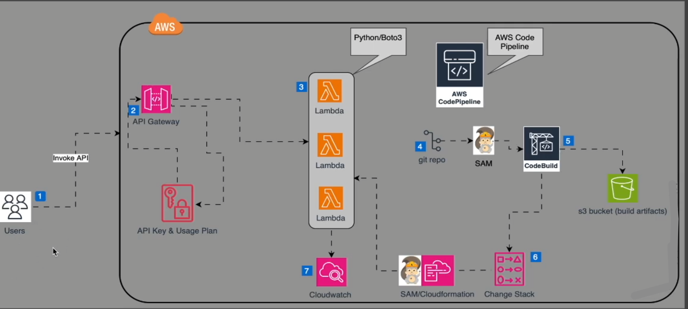

Modernización, CI/CD y Observabilidad Cloud (Serverless)
Clasificación 7 'Rs'
Analizar la infraestructura ECS/Fargate de la 2ª Eval y justificar qué piezas van a Serverless.
Justificación Tecnológica (FinOps)
Comparar costes proyectados: ¿Por qué AWS SAM/Lambda en lugar de contenedores fijos?
Plan de Cutover & Rollback
Definir cómo haremos el paso de tráfico y qué hacer si la migración falla.

Referencia visual: Orquestación de Lambdas, API Gateway y Pipeline de despliegue.
Transformamos la lógica de negocio a funciones Lambda y configuramos el modelo SAM siguiendo el diagrama superior.
Plantilla base para recursos SAM
Pipeline YAML (GitHub Actions / CodePipeline)
Configurar etapas de Build, Test y Deploy Automático.
Security Scan (DevSecOps)
Integrar escaneo de secretos y dependencias (ej. Snyk o AWS Secrets Manager).
Pruebas Unitarias en el Pipeline
El despliegue debe fallar si las pruebas de código no pasan.
"Despliega siempre en un entorno de Staging antes que en Producción."
Métricas en Tiempo Real
Pruebas finales de carga, ajuste de costes y defensa ante el comité simulado.
Revisión final del consumo de créditos AWS Academy.
Inyectar un error y mostrar cómo la observabilidad lo detecta.
Defensa de las decisiones tomadas ante el comité.